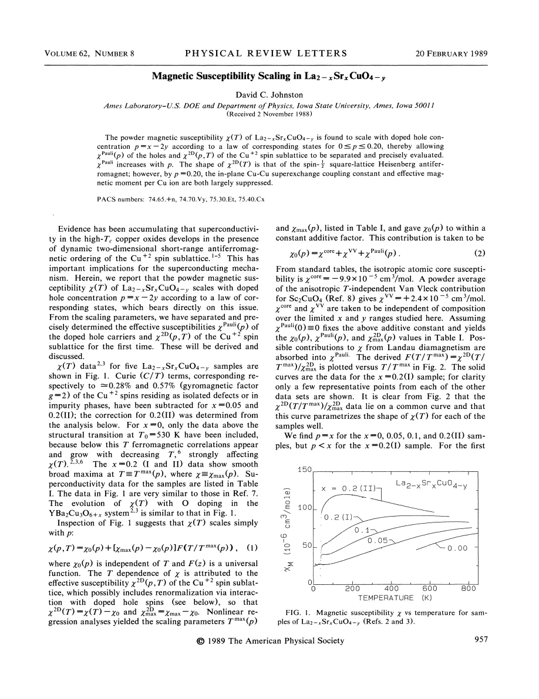
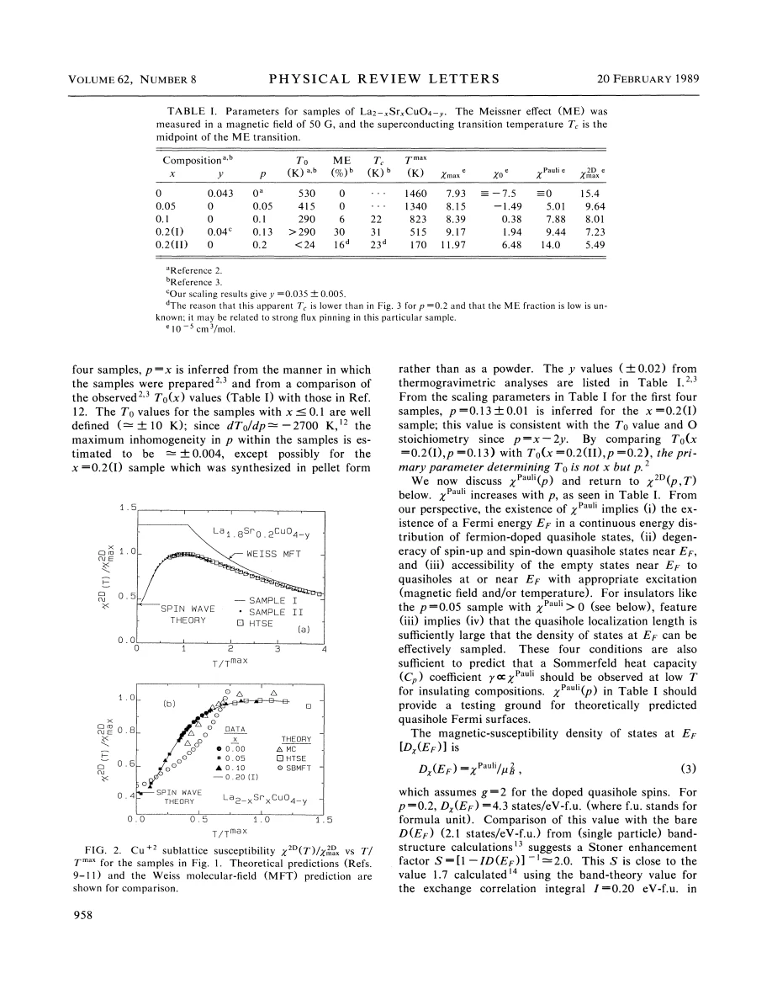
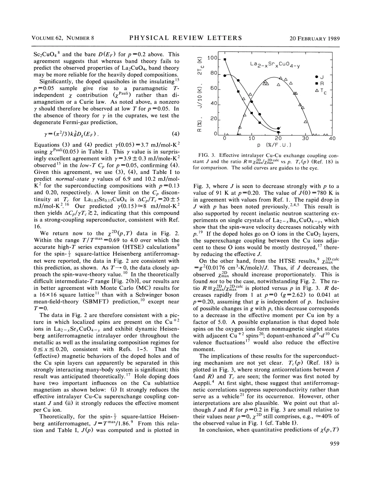

data analysis · Johnston · supplied source 1989
Magnetic Susceptibility Scaling in La2−xSrxCuO4−y
The supplied 1989 analysis collapses LSCO powder susceptibility onto a common curve after subtracting an offset and rescaling temperature and amplitude; its AF-like spin component and Pauli-like hole contribution remain model-dependent separations.
The question: Can differently doped susceptibility curves share one shape while their temperature scale, amplitude and constant background change?
Before you start: the few terms you need
- Uniform susceptibility: static response to a spatially uniform field
- Curie term: a C/T contribution from nearly free moments
- Pauli-like term: temperature-independent spin response near a Fermi energy
- Scaling collapse: curves overlap after dimensionless rescaling
- Effective exchange: an interaction scale inferred through a specified model
See → explain → test
Understand it in four pictures.
Picture 1 / 4
Separate the ingredients before scaling
Look for: The measured powder signal contains constant terms, a temperature-dependent Cu contribution and small sample-specific defect tails.
Swipe across the picture to read every label, or enlarge it below.
- Constant offset
- Cu spin response
- Defect tail
Teaching decomposition of this historical analysis, not an independently measured microscopic partition.
A low-temperature tail and a broad spin response need not describe the same spins.
Check the original: PDF p. 1
Picture 2 / 4
Use hole content rather than Sr alone
Look for: Two x=.20 samples have different oxygen deficits and therefore different inferred hole fractions.
Swipe across the picture to read every label, or enlarge it below.
- x=.20 sample I
- x=.20 sample II
Teaching source comparison. Here y is oxygen deficiency; it is not the Zn fraction used in source 331.
Equal nominal Sr content does not guarantee equal electronic filling.
Picture 3 / 4
Remove height and width changes
Look for: Subtract χ0, divide by the spin-component maximum and plot against T/Tmax.
Swipe across the picture to read every label, or enlarge it below.
- Subtract χ0
- Divide by χ2D,max
- Plot versus T/Tmax
- Compare curve shape
Teaching normalization workflow; no experimental points or fitted universal curve are regenerated.
The common shape is tested after three composition-dependent parameters have been fitted.
Picture 4 / 4
Keep shape and interpretation separate
Look for: Compare the common curve with square-lattice AF calculations, then use its scales to infer effective J and moment.
Swipe across the picture to read every label, or enlarge it below.
- Shared normalized shape
- AF model comparison
- Effective spin scales
Historical model inference; the extracted uniform-response scale is not automatically a directly measured microscopic bond exchange.
A successful collapse supports a useful description without uniquely proving the pairing mechanism.
Predict before revealing
At fixed x=.20, oxygen deficiency changes to y=.035. What is the source's nominal hole content?
Choose an answer, then compare the reasoning.
In this bookkeeping oxygen deficiency compensates two holes per vacancy.
Read the answer
p=.13 from p=x−2y In this bookkeeping oxygen deficiency compensates two holes per vacancy.
Go deeper Follow the full argument
What is being separated in a powder measurement
Johnston analyzes existing susceptibility data for five La2−xSrxCuO4−y samples from undoped material through hole concentration p=.20. A uniform magnetic field measures the static q=0 response; it does not directly measure the staggered AF susceptibility or a neutron excitation spectrum. Before seeking a common curve, the analysis subtracts small Curie tails for the x=.05 and one x=.20 sample, equivalent under its assumptions to about 0.28% and 0.57% nearly free Cu moments. For the undoped material only data above the structural transition near 530 K are included, because lower-temperature weak ferromagnetic correlations affect the measured response. These restrictions matter: the proposed scaling concerns a selected, corrected response, rather than every raw susceptibility value at every temperature.
The charge variable includes oxygen stoichiometry
The paper uses p=x−2y, where x is Sr substitution and y is oxygen deficiency in O4−y. An oxygen vacancy compensates two nominal holes in this bookkeeping. Two samples with x=.20 therefore need not occupy the same position along the doping axis. For sample I the scaling analysis infers p≈.13 and y≈.035, whereas sample II is assigned p≈.20. Structural-transition information and oxygen analysis are used as consistency checks rather than treating Sr content alone as a precise carrier measurement. This also explains why their susceptibility maxima and superconducting properties differ. Here p is holes per formula unit, with one Cu per formula unit. The symbol y has a different meaning in Nakano's Zn-substituted formula, so those two composition notations must be translated before comparison.
What the collapse actually removes
The scaling law subtracts a temperature-independent χ0, divides the remainder by its maximum and rescales temperature by Tmax. Changing the original vertical offset, height and horizontal width is therefore allowed; the residual shape is the nontrivial test. The normalized curves agree with high-temperature series predictions for a spin-one-half square-lattice Heisenberg antiferromagnet over their stated range and with selected low/intermediate-temperature calculations. Some Tmax values are inferred by the fit rather than directly observed maxima within the plotted measurement range: the undoped value is1460 K, whereas the figure extends only to about 800 K. The label 'universal' means common within this supplied analysis and composition interval. It does not establish that every LSCO sample, especially one with impurities or a different corrected background, must follow exactly the same function.
A constant response is not automatically a conducting metal
Scaling determines χ0 only up to an additive constant. The physical decomposition uses assumed composition-independent core and Van Vleck contributions and fixes the remainder by assigning zero Pauli-like hole response at p=0. The inferred hole contribution then increases with doping; any Landau diamagnetism is absorbed into that label. The source even assigns a positive Pauli-like term to its electrically insulating p=.05 sample, arguing that a localized quasihole system can still sample low-energy states without carrying a metallic dc current. Under a Fermi-gas comparison it predicts an electronic heat-capacity coefficient around 3.7 mJ/mol K², close to a cited 3.9±.3 value. That comparison is informative but does not turn the fitted offset into a direct transport measurement or an assumption-free density of states.
The effective spin scales and the open mechanism question
Using the paper's square-lattice conversion J=Tmax/1.86 gives an effective J decreasing from roughly 780 K at p=0 to 91 K at p=.20. The observed amplitude also falls far below what unchanged moments with that reduced J would predict. The ratio R to the model's expected maximum reaches about.041, corresponding to a roughly fivefold reduction of effective moment amplitude under the stated comparison. These are parameters inferred from uniform-response scaling; microscopic exchange conventions and probes require care before equating them with a later bond-resolved measurement. Oxygen-hole singlets and Cu valence fluctuations are suggested explanations. The anticorrelation between these scales and Tc does not settle whether magnetism promotes or suppresses pairing; the author explicitly leaves alternative interpretations open. Nakano's later low-temperature scaling result offers an important source-specific challenge to the inferred AF curve.
Translate the mathematics Key equations and symbol meanings
p = x − 2y
Symbols: p: nominal hole content per formula unit; x: Sr fraction; y: oxygen deficiency in La2−xSrxCuO4−y.
Equal x can correspond to different p when oxygen stoichiometry differs. This is chemical bookkeeping, not an independent Hall carrier count.
χ(p,T) = χ0(p) + [χmax(p) − χ0(p)] F(T/Tmax(p))
Symbols: χ0: fitted temperature-independent offset; χmax: total susceptibility at its maximum; Tmax: maximum temperature scale; F: normalized common shape, F(1)=1.
The curve-shape test follows subtraction and rescaling. Defect terms have already been removed for the specified samples.
χ0(p) = χcore + χVV + χPauli(p); χ2D(p,T) = χ(p,T) − χ0(p)
Symbols: χcore: core diamagnetism; χVV: Van Vleck response; χPauli: inferred constant hole contribution, including possible Landau terms; χ2D: the assigned Cu spin component.
The labels require background assumptions and χPauli(0)=0 to fix an otherwise ambiguous additive constant.
Jpaper = Tmax/1.86; R = χ2D,max / χ2D,max,calc
Symbols: Jpaper: source's effective exchange in kelvin; calculated maximum: square-lattice AF prediction at that J and assumed g; R: observed/model amplitude ratio.
These are model-derived temperature and moment scales. Quote the source convention when comparing with another Hamiltonian or probe.
Read the evidence A guided look at the original figures

Open the full original page ↗

Open the full original page ↗

Open the full original page ↗
What this paper does—and does not—establish
- Historical 1989 analysis of selected corrected powder data; fitted universality and physical separation require assumptions.
- Some maxima, particularly the undoped 1460 K scale, are inferred beyond the plotted measurement window.
- Model-derived exchange/moment scales do not uniquely determine the superconducting mechanism or every microscopic exchange.
- Compare explicitly with source 331's later, more strongly suppressed extrapolated low-temperature curve; do not average the two shapes.
Explain it back.
Try answering aloud before opening the explanation.
Does a successful scaling collapse keep all raw curves identical?
No. Offset, amplitude and temperature scale vary; the corrected normalized shape is compared.
Why is the constant Pauli-like contribution model dependent?
Scaling alone leaves an additive ambiguity; core/Van Vleck assumptions and χPauli(0)=0 fix it.
Does positive χPauli prove metallic dc conduction?
No. The source assigns such a response even to its insulating p=.05 sample.
Is the inferred J a direct neutron determination of a microscopic exchange bond?
No. It is an effective scale obtained through the paper's uniform-susceptibility model and convention.
Connect the next paper.
Source version, reading coverage and preservation
All four supplied pages read, including final conclusion; all four rendered pages inspected in a contact sheet, with Table I, normalized scaling and effective-J/moment discussion on pages 2–3 checked at full size.
Reviewed body pages: 1, 2, 3, 4. References, previously measured sample data, thermodynamic comparisons and theoretical calculations are not independently re-read or regenerated.
Original file retained byte for byte. SHA-256: 880986e39847df8c8419eb0ffd46126f35cde1bb964fcbe0dba7d35b8fefd139
Filename: PRL - Johnston - Magnetic susceptibility scaling in LSCO - 1989.pdf.